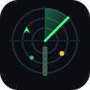

←
FFS ホーム

Web GCA
GCA
精密進入
GCI
迎撃管制
TWR
飛行場
LSO
着艦
サーバー
滑走路
↻
地図
性能
-- Hz · -- ms
接続中…
Azimuth
方位 / コース偏差
−
12 nm
+
Elevation
高度 / グライドパス偏差
PPI
ドラッグで移動・ホイールで拡大縮小
BULLS
中心に戻す
−
20 nm
+
BULLS --
Aerodrome
飛行場周辺・ホイールで拡大縮小
−
6 nm
+
Lineup / Glideslope
ラインアップと降下角
−
4 nm
+
Platform View
LSO 台からの見え方